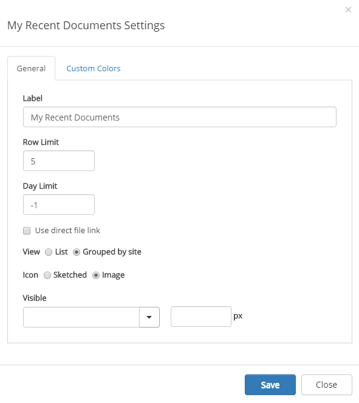
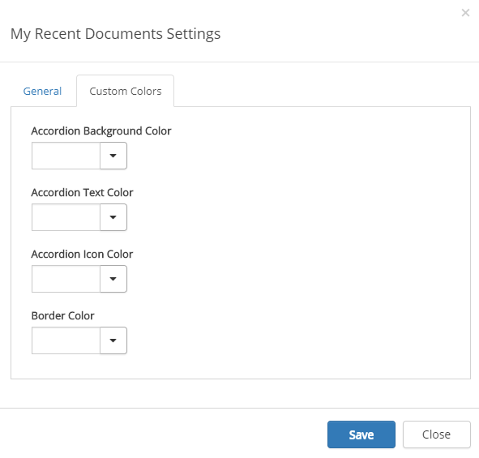

My Recent Documents
You can use the My Recent Documents control on an any publishing control. The control displays a lista og all documents the logged in user recently has read or edited.
My Recent Documents is avaiable as a block for Quick Pages and as a web part.
Settings for the control
The following settings are available:

General
On this tab you can set the following:
- Label Enter the title to be displayed for the control.
- Row limit Enter number of rows for each "page" in the list.
- Day limit Select how far back "recent" should bes.
- Use direct file link: If you would like the document to always be opened in the full version of application (the version installed on the computer, not the web version), check this box.
- View Select a simple listing in time order or Grouped by site.
- Icon: Select how to display the icons for the document type, Sketched (black and white) or Image (color).
- Visible Set when the control will be visible; always, withing a maximum width or within a minimum width.
Custom Colors
You should primarily set colors through Theme colors in Omnia Admin (System/Settings/Default colors). If you still would like custom colors for the control, you can set them using this tab.
